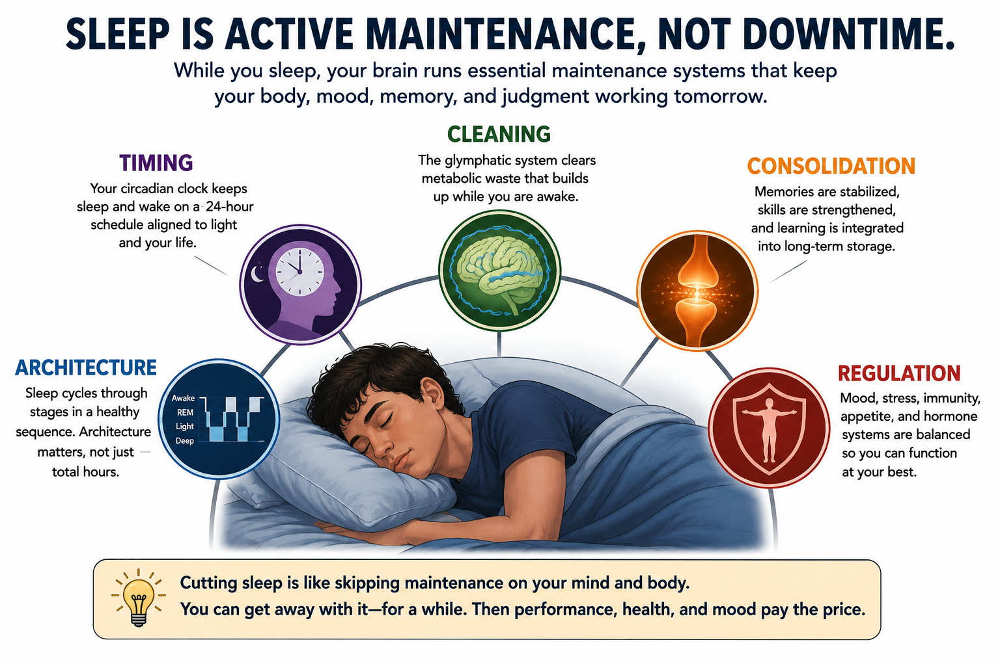
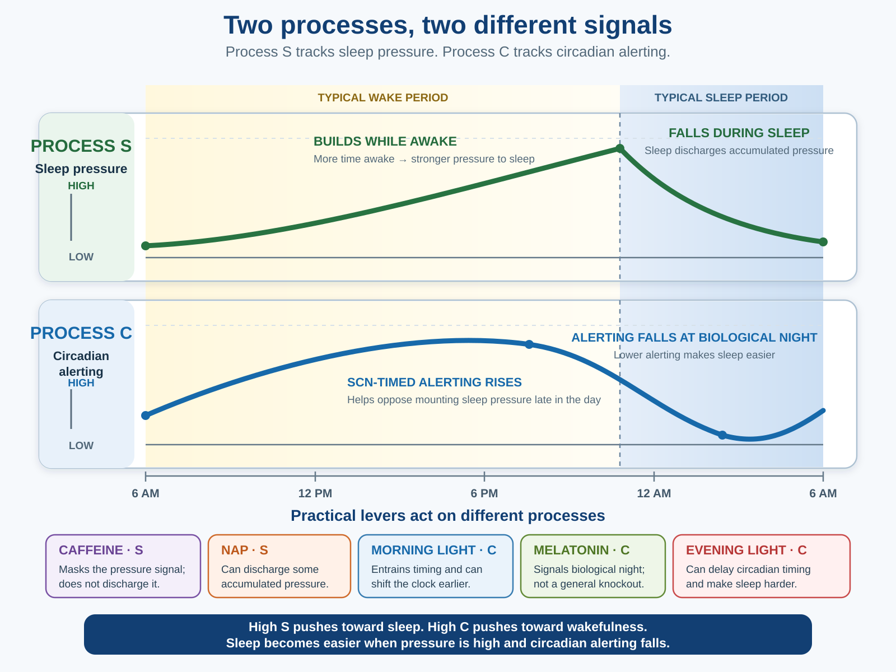
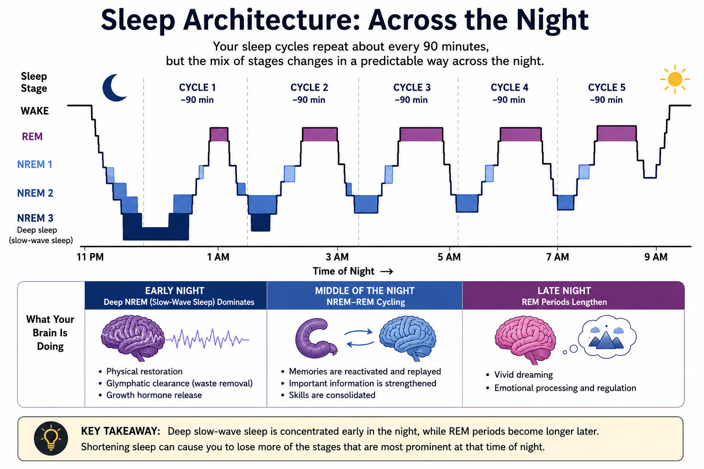
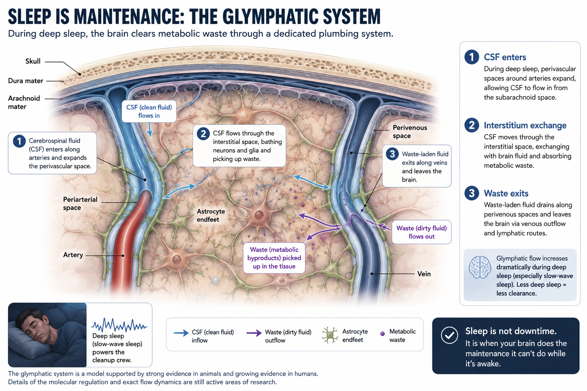

Sleep
"Sleep is your brain's downtime — a stretch of hours when it powers down and does essentially nothing until morning."
It is an easy thing to believe, because from the outside that is exactly what sleep looks like. A sleeping person is still, unresponsive, disconnected from the room. Wake them and they often have no idea how much time has passed. If consciousness is the light being on, sleep looks like the light being off — the brain idling in a low-power state, waiting for daylight to switch it back on.
The measurements say otherwise. Sleep is not empty time. During certain stages your brain is as metabolically active as it is while you are awake, cycling through several architecturally distinct states across the night, each with its own electrical signature, in a pattern that repeats several times before morning. Across that cycling, the brain and body do real work: clearing metabolic waste, reorganizing memories, and resetting hormones, appetite, and immune activity for the next day. Not every one of those processes belongs neatly to one stage, and some are far better established than others — the rest of this chapter sorts out which is which. But the central point is not in doubt: sleep is not the brain doing nothing. It is the brain doing real biological work it cannot do quite the same way while awake.
{kind=link}

Chapter 5 developed the idea that consciousness is the brain's live, action-guiding predictive model of the world and of itself — a construction, not a recording, continuously corrected by sensory signals. This chapter picks up that same model and asks a question the waking chapters could not: what happens to it overnight? The short answer is that sleep is when that model gets maintained — reorganized, cleaned, and recalibrated for the next day. The maintenance is not one job on a fixed checklist, and it is not perfectly uniform across the night, but it is real, active work, and — as the final section shows in concrete, measured terms — skipping it has specific, documented costs.
Where This Fits
What is your brain doing that it cannot do while you are awake? That is this chapter's question. Chapter 5 asked what it means for the brain's predictive model to become conscious experience, and traced how that model can be chemically altered by drugs. This chapter follows the same model into a state we all enter every day: sleep. Where Chapter 5 was about that model running, this chapter is about the model being maintained — reorganized, cleaned, and re-synchronized to the day, through processes that overlap rather than run in a fixed, guaranteed order. Two threads introduced here run forward through the book. Sleep's contribution to memory sets up Chapter 8's deep treatment of how memories are formed and stored, and the appetite- and reward-related consequences of sleep loss connect to the dopamine and reward-learning machinery that Chapter 7 uses to explain reinforcement. The suprachiasmatic nucleus, the small clock at the center of this chapter, is one specific job performed by the hypothalamus, a structure Chapter 3 already introduced for its broader role in regulating basic biological drives.
Learning Objectives
- Describe the role of the suprachiasmatic nucleus in generating circadian rhythms, and explain what happens when internal timing and external light cues fall out of sync (APA IPI Theme 3: biological, psychological, and social factors interact).
- Distinguish the two processes in the two-process model of sleep regulation, and explain which interventions (caffeine, light, melatonin) act on which process and why that distinction matters practically.
- Describe a typical night's sleep by its EEG patterns, explain what sleep does for the brain, and explain why sleep varies across species.
- Compare activation-synthesis theory and threat-simulation theory as explanations operating at different levels for why dreams occur and why dream content skews the way it does.
- Explain how sleep paralysis, Type 1 narcolepsy, NREM arousal parasomnias, and REM sleep behavior disorder reveal different failures at the boundaries among wakefulness, NREM sleep, REM sleep, and muscle control.
- Evaluate the evidence linking sleep deprivation to impaired emotional regulation and other physiological consequences, distinguishing well-established findings from more limited or preliminary ones.
Section 1: Circadian Rhythms and Sleep Pressure
Some of your most important biological processing runs on a clock that does not even need you to be awake to keep working. A circadian rhythm is a roughly 24-hour biological cycle that regulates sleep and wakefulness, body temperature, hormone release, and alertness, whether or not you are paying any attention to it. The body's master clock is the suprachiasmatic nucleus (SCN), a small cluster of neurons in the hypothalamus — the same brain structure Chapter 3 introduced as central to regulating basic biological drives. The SCN receives direct input from light-sensitive cells in the retina by way of the retinohypothalamic tract, and uses that light information to synchronize, or entrain, the body's internal timing to the actual 24-hour day. The SCN, in turn, signals the pineal gland to release melatonin, a hormone that rises in the evening as a signal of biological night and falls again toward morning.
![Figure 6.2: The SCN and circadian rhythms. Light entering the eye is detected by retinal cells, and a yellow pathway carries that signal to an anatomical inset. The inset places the paired suprachiasmatic nuclei in the anterior hypothalamus immediately above the optic chiasm. The SCN coordinates rhythms throughout the brain and body, including melatonin release from the pineal gland, cortisol release from the adrenal glands, body temperature, and the sleep-wake cycle — all running on a roughly 24-hour schedule.](../images/ch06/fig_scn_circadian_clock_entrainment_inset.png)
A clock that exists specifically to anticipate, rather than just react to, the day-night cycle is exactly what an evolutionary perspective would predict. An organism that could only respond to light as it directly experienced it — going dark, getting light — would always be a step behind: scrambling for shelter only once a predator's nocturnal activity had already begun, or only beginning to mobilize energy once daylight (and the activity of competitors and predators) had already arrived. An internal clock running slightly ahead of the actual environment, primed and physiologically ready before the relevant change in light even occurs, is a substantial advantage — and indeed, when researchers isolate animals (including humans) from all external light cues entirely, the SCN keeps running on its own, in a "free-running" rhythm close to but not exactly 24 hours, which is itself strong evidence that the clock is internally generated rather than simply tracking the sun.
Circadian timing also varies systematically across individuals. Morning larks and night owls reflect relatively stable differences in chronotype. Adolescence adds a developmental shift: during puberty, circadian timing moves toward later sleep and wake times, then gradually shifts earlier again in adulthood. Evening light and screen use can push that timing later still, but the underlying change is not merely a bad habit. Teenagers who struggle to function at 7 a.m. are not simply undisciplined. Research on later school start times generally finds increased sleep and reduced daytime sleepiness, although academic and broader health benefits vary across studies (Minges & Redeker, 2016).
Sleep timing is governed by two partly independent systems. Adenosine is produced as cells use energy and contributes to the sleep pressure that builds during wakefulness. Caffeine blocks adenosine receptors, reducing the signal of that pressure without replacing sleep. When the caffeine wears off, the underlying sleep pressure becomes noticeable again — the familiar caffeine "crash." This homeostatic pressure (Process S) works alongside the circadian alerting signal set by the SCN (Process C); together they make up Borbély's (1982) two-process model of sleep regulation. The two usually cooperate, but the misery of jet lag and overnight shift work is what happens when they give conflicting signals at once — sleep pressure saying one thing, the body clock saying another.
That two-system split is also where the practical levers act — and because each lever works on a different system, they do different things:
| Intervention | Acts on | What it does not do |
|---|---|---|
| Caffeine | Sleep pressure — blocks adenosine receptors | Doesn't clear the pressure; drowsiness returns when it wears off |
| Morning light | Circadian clock — entrains the SCN | Doesn't replace lost sleep |
| Melatonin | Circadian timing — signals biological night | Not a general sedative or "knockout" drug |
| A well-timed nap | Sleep pressure — discharges some | Can undercut nighttime sleep if too long or too late |
{kind=link}

Try it yourself: the When Will You Feel Sleepy? lab lets you test how time awake, caffeine, a nap, light, and travel move Process S and Process C separately. The lab is worth doing precisely because the table above collapses a distinction students tend to blur: caffeine masks sleep pressure without reducing it, a well-timed nap actually discharges some of it, and light or melatonin act on circadian timing instead, not sleep pressure at all — three different mechanisms that can look identical from the outside as "feeling more awake."
A friend drinks a strong coffee at 9 p.m. to stay alert for a late shift, then boards a flight the next morning that crosses six time zones. Using Process S and Process C separately, explain why the coffee and the time-zone change produce two different kinds of "feeling off" — and why a second cup of coffee will not fix the jet lag.
Section 2: Sleep — Architecture, Function, and Dreams
Sleep probably solves more than one biological problem at once, and the leading accounts of why it exists do not all rest on evidence of the same strength. Sorting out which is which starts with knowing what sleep actually looks like at the level of the brain.
Sleep Architecture
Before 1953, sleep was widely treated as a single, roughly uniform state — the brain quietly idling until morning. That picture changed because of a graduate student's careful observation. Working in Nathaniel Kleitman's sleep laboratory at the University of Chicago, Eugene Aserinsky noticed that sleeping infants displayed periodic bursts of rapid eye movement, accompanied by a distinct, fast, low-voltage pattern of brain activity on the EEG — a sharp departure from the slow, high-amplitude waves that otherwise defined sleep (Aserinsky & Kleitman, 1953). Adults, it turned out, showed the same thing: regularly recurring periods, roughly every 90 minutes, during which the eyes darted rapidly beneath closed lids and brain activity briefly resembled wakefulness far more than sleep. Waking people specifically during these periods, rather than during quiet sleep, produced vivid dream reports far more often (Dement & Kleitman, 1957) — the first solid evidence connecting a specific, measurable physiological state to the subjective experience of dreaming. This single observation — that sleep is not one state but several, cycling in a predictable pattern across the night — reorganized how an entire field studied sleep, using nothing more exotic than careful, sustained observation and a working EEG machine.
In your own words, what was Aserinsky and Kleitman's key observation, and why did it matter that they could connect a specific physiological signature (rapid eye movement, fast EEG activity) to a specific subjective experience (vivid dreaming)?
The discovery launched polysomnography — the simultaneous recording of brain activity (EEG), eye movement (EOG), and muscle activity (EMG) during sleep — as the standard tool for studying it, and that tool revealed sleep's organized architecture: three stages of non-REM (NREM) sleep, and REM sleep. It helps to be precise about what these stages are: NREM 1 through NREM 3 are scoring categories defined by EEG criteria, not a smooth ladder of increasing depth that a sleeper glides down and back up minute by minute.
| Stage | EEG signature | What to remember | Common confusion |
|---|---|---|---|
| NREM 1 | Slowing waves; brief transition | The falling-asleep stage; hypnic jerks | Not "deep sleep" |
| NREM 2 | Sleep spindles and K-complexes | Largest share of the night; spindle density rises after learning (offline consolidation) | Spindles aren't just noise |
| NREM 3 | Large, slow delta waves | Deepest, hardest to wake; source of sleepwalking and night terrors | Not the vivid-dream stage |
| REM | Fast, low-voltage, wake-like | Vivid dreaming; REM atonia (near-total muscle paralysis) | Not the same as sleepwalking |
Three points matter for the rest of the chapter. Ordinary sleepwalking is not acting out a dream — it emerges from deep NREM 3, not the dreaming state (the true dream-enactment disorder comes later in this section). REM atonia is near-total but not absolute — a few muscles, including the diaphragm and the eyes, stay active, and brief twitches can break through even in typical sleepers. And a full night cycles through these stages roughly every 90 minutes on average, with REM periods lengthening across the night — which is why someone woken near morning is more likely to report a vivid dream than someone woken at midnight, though vivid dreams do occur after NREM awakenings too, just less often.
REM atonia can sometimes persist briefly as consciousness returns. During sleep paralysis, a person feels awake and aware but cannot move. Dreamlike imagery or other internally generated perceptions may persist too, sometimes producing a threatening presence, pressure on the chest, fear, or a sense of difficult breathing — though not every episode includes hallucinations or chest pressure. Across cultures, people have interpreted this pattern as an incubus, demon, witch, spirit, or other supernatural visitor. The experience is real; a supernatural cause is not required. It is a temporary overlap between conscious wakefulness and features of REM sleep (Molendijk et al., 2017). It is also a useful example of the brain interpreting an ambiguous biological state through expectation and cultural knowledge: paralysis, fear, and internally generated perception arrive first, and the brain builds an explanation from the concepts available to it.
{kind=link}

Sleep architecture also changes substantially across development. Fetuses and newborns spend much more of their sleep in REM-like active sleep than adults, and both total sleep time and the proportion of REM-like sleep decline as development proceeds (Roffwarg et al., 1966). Brief twitches occur against a broader background of muscle atonia; they are not simply the result of an unfinished atonia system. Those twitches provide structured sensory feedback from the moving body and have been proposed to help the developing nervous system map the body it controls (Tiriac et al., 2015). Across infancy and childhood, sleep architecture becomes increasingly adult-like.
Later adulthood brings a different shift. Sleep tends to become lighter and more fragmented, with more transitions into wakefulness and less deep slow-wave sleep (Mander et al., 2017). Sleep is therefore not one fixed program running unchanged from before birth to old age: early in life its architecture is consistent with a role in construction; later in life that architecture becomes harder to sustain.
What Sleep May Do
Why does sleep exist? The question has two halves. What does sleep do for the machinery — and why would an animal risk a third of its life unconscious to get it? Restoration and memory reorganization answer the first. The evolutionary trade-off answers the second. They are not three theories competing for one prize.
The restorative account holds that sleep allows the body and brain to repair and replenish: clearing metabolic waste, restoring depleted energy stores, and supporting immune function.
The restorative account gained a concrete mechanistic boost in 2013 with the discovery of the glymphatic system: in mice, sleep substantially increases fluid exchange through the narrow interstitial spaces between brain cells, helping clear metabolic waste such as amyloid-beta, a byproduct implicated in neurodegenerative disease (Xie et al., 2013). Human evidence is more indirect — drawn mainly from imaging and cerebrospinal-fluid tracer studies rather than the direct visualization possible in mice — so this should not be read as proof that an ordinary night's sleep prevents Alzheimer's disease. Even with that boundary, the glymphatic system gives the restorative account a concrete biological mechanism it did not have before 2013.
{kind=link}

And a substantial body of evidence supports a memory-consolidation account: sleep helps stabilize and reorganize some newly formed memories, with slow-wave sleep and REM sleep contributing somewhat differently across different tasks (Diekelmann & Born, 2010). The details vary by memory system and task, but the broad effect is real.
H.M. was Henry Molaison, a patient who lost the ability to form new long-term declarative memories after medial temporal lobe surgery (Scoville & Milner, 1957). His case gets its full treatment in Chapter 8, but it matters here because sleep-related memory reorganization draws on much of the same medial temporal lobe and hippocampal circuitry his case made famous. Sleep does not simply "rest" memory systems; it appears to actively reorganize what was learned that day, using machinery closely related to what builds long-term memories in the first place.
REM sleep has a distinctive neurochemical signature: cholinergic projections from the basal forebrain surge during REM, contributing to memory-related processing alongside other neuromodulatory changes across the night — acetylcholine is a well-documented feature of REM physiology, not the sole driver of consolidation. This is relevant to the alcohol-sleep paradox: alcohol's sedative properties help some people fall asleep faster, but alcohol delays REM onset, suppresses total REM time, and fragments the second half of the night (Ebrahim, Shapiro, Williams, & Fenwick, 2013) — so a night of drinking can feel complete while its architecture is quietly wrecked.
Zebra finches replay the precise neural patterns of their songs during sleep — brain regions active while singing fire in the same sequence during subsequent sleep, compressing the learned pattern while the bird is offline (Dave & Margoliash, 2000). How does this extend the memory-consolidation argument beyond humans, and what does it suggest about whether sleep-dependent consolidation is a recent evolutionary invention or an ancient, conserved mechanism?
Those all answer the first half of the question. None of them answers the second: why an animal would risk the night at all. The evolutionary-adaptive account points out that sleep timing in most species lines up with when that species would otherwise be least able to do anything useful or safe — a trade-off between the benefits of activity and the cost of exposure to predators or hazards. The prediction holds up well: species that sleep in exposed, risky settings shift the architecture of their sleep toward lighter, more easily interrupted states, rather than necessarily sleeping fewer total hours (Lima et al., 2005). Total sleep duration across species is messier, but the shift away from vulnerable deep sleep under risk is exactly what that trade-off predicts.
Sleep is also not all-or-nothing. Many birds and aquatic mammals sleep one hemisphere at a time: a duck at the edge of a row keeps its outward-facing eye open and half its brain awake, and great frigatebirds sleep in flight — brief bursts totaling under an hour a day, often with the hemisphere steering the turn kept awake (Rattenborg, Voirin, Cruz, Tisdale, Dell'Omo, Lipp, Wikelski, & Vyssotski, 2016). Humans keep a milder version of this: on your first night somewhere unfamiliar, one hemisphere stays lighter and more vigilant than the other, tracking with the restless feeling that first night often brings (Tamaki et al., 2016). Sleep is regional and graded, not a single switch.
The picture that emerges from sleep research — a brain that keeps working in the near-absence of sensory input, cycling through distinct states, reorganizing its own representations along the way — makes concrete the framework Chapter 5 built. There, consciousness was defined as the brain's predictive model of the world and of the self: not a transparent readout of a stable inner self but a construction that can be disrupted by anesthesia, reorganized during sleep, chemically altered by drugs, and degraded when the systems maintaining it are compromised. Sleep is the clearest everyday case of that model being taken offline and maintained. Nothing here resolves the deeper question Chapter 5 left open — why any of this is accompanied by subjective experience at all — but it shows, in measurable detail, what maintaining a conscious system actually involves.
Dreams and Sleep Disorders
If REM sleep is when most vivid dreaming happens, what are dreams actually for, and where does their strange, often illogical content come from? These are really two different questions, and it helps to keep them apart. Activation-synthesis theory (Hobson & McCarley, 1977) addresses the mechanism question: it proposes that dreams are the forebrain's attempt to make sense of essentially random neural activity generated by the brainstem during REM sleep — the cortex, deprived of real sensory input but still very much active, synthesizes a story out of whatever internally generated signals it receives, which is why dream narratives are often vivid in sensory detail but loose, associative, or outright bizarre in their logic.
Threat-simulation theory (Revonsuo, 2000) asks a more ambitious question — not just where dream content comes from, but why it skews the way it does, and whether that skew served a function. It proposes that dreaming exists specifically because it gave ancestral humans repeated, safe practice at perceiving and responding to threatening situations. The descriptive part of this claim is well documented: dream content skews heavily toward threatening and anxiety-related scenarios, with about two-thirds of dream reports carrying negative emotional tone and aggression the most common social interaction (Valli & Revonsuo, 2009). The functional part — that this pattern exists because it improved waking threat performance — is considerably more contested; studies disagree on how often dreams contain realistic, life-threatening scenarios.
Activation-synthesis theory and threat-simulation theory are not simply two complementary answers to the same question. One explains the mechanism — how bizarre dream content gets generated moment to moment; the other proposes a function — why dreaming's particular content bias might have been favored by selection. Only the descriptive half of the second claim (the negative-emotion skew) currently has strong support.
In 1924, André Breton's Surrealist Manifesto proposed that dreams gave access to a creative unconscious beyond rational control, drawing on Freud's claim that the id — the primitive, unfiltered part of the mind — roams freely in sleep. The Surrealists tried to portray exactly that: vivid imagery, strong emotion, and abrupt, impossible shifts in time and place. Salvador Dalí called his paintings "hand painted dream photographs," and the melting clocks in The Persistence of Memory give that logic a memorable visual form. REM sleep does involve vivid, internally generated imagery, reduced prefrontal narrative control, and heightened amygdala activity — but the painting is not evidence about REM sleep, and it is not a diagram of the brain. It is a striking picture of the phenomenology neuroscience is trying to explain, not a mechanism. Freud and the Surrealists described the experience; neuroscience asks how the brain produces it.
Both accounts fit a pattern this book has developed since Chapter 4: the cortex does not wait for external input to produce a perceptual model — it always constructs one, whether sensory input is rich, absent, or, as in REM sleep, internally generated. Chapter 5 made the same point with Charles Bonnet syndrome, where people with significant vision loss experience vivid visual hallucinations because the visual prediction machinery keeps generating content with no sensory stream to correct it. REM dreaming is another instance of the same principle: interpretive construction running on internally generated signals rather than on the world.
Sleep Disorders
Insomnia and obstructive sleep apnea are common and consequential, but the table below focuses on disorders that reveal how wakefulness, NREM sleep, REM sleep, and muscle control are normally kept separate.
| Disorder | Mechanism | Key feature |
|---|---|---|
| Sleep paralysis / incubus phenomenon | REM atonia persists briefly into conscious wakefulness | Awareness with inability to move; sometimes accompanied by a sensed presence, chest pressure, fear, or dreamlike hallucination |
| Narcolepsy (Type 1) | Autoimmune loss of orexin/hypocretin neurons destabilizes wakefulness | Cataplexy — REM-related muscle atonia intrudes into wakefulness while consciousness is retained, often after strong emotion |
| NREM arousal parasomnias | Incomplete arousal from deep NREM, first half of night | Sleepwalking, sleep talking, night terrors — not dream-enactment |
| REM sleep behavior disorder | Failure of REM atonia | The sleeper physically enacts dream content — the disorder that actually matches "acting out a dream" |
Together, these cases make the boundaries visible. Narcolepsy demonstrates why wakefulness must be actively stabilized: without orexin's stabilizing signal, REM-related muscle atonia can intrude into wakefulness as cataplexy even though consciousness is retained. The parasomnia split resolves the chapter's running misconception — "sleepwalkers are acting out a dream" actually describes REM sleep behavior disorder, not ordinary NREM sleepwalking. Sleep paralysis shows the inverse boundary failure: REM atonia briefly remains as wakeful awareness returns.
Try it yourself: the Sleep-State Detective lab asks you to classify simplified sleep cases using EEG, eye movement, muscle tone, behavior, and time of night — the same evidence base this table draws on — and work out for yourself why movement alone never identifies the sleep stage: ordinary sleepwalking comes out of deep NREM sleep, while REM sleep behavior disorder is a specific failure of REM atonia. The cases are simplified educational examples, not a diagnostic tool.
Sleep is a field where solid findings and confident-sounding overstatement travel together, so it is worth separating them. Well established: circadian timing and the SCN; the NREM/REM architecture and its ~90-minute cycling; that sleep loss degrades attention and emotional regulation; and that sleep supports memory consolidation in some form. Real but more variable or still developing: the human evidence for glymphatic clearance, the exact hormonal pathways linking sleep loss to appetite, single-function theories of dreaming, and many of the long-term disease-risk numbers popularized in trade books. A good scientific answer about sleep never stops at "sleep matters" — it asks which system, which outcome, and how strong the evidence is.
Section 3: Sleep Deprivation and Its Consequences
If the previous section established that sleep is a biologically active process, a direct question follows: what happens when that process is cut short? The research literature answers in concrete terms, though the strength of evidence varies across findings.
The common interpretation of becoming irritable after a poor night's sleep is that it is a matter of patience or willpower: the person is choosing not to manage their reactions. The evidence points to something more specific. Sleep deprivation is associated with reduced prefrontal cortex activity, and the prefrontal cortex normally exerts top-down inhibitory control over the amygdala — the brain's primary threat- and emotion-detection system, introduced in Chapter 5 as part of the salience machinery that flags what matters. In an fMRI study, participants who had gone without sleep showed 60% greater amygdala reactivity to emotionally negative images than well-rested controls, with sharply reduced functional connectivity between medial prefrontal cortex and amygdala (Yoo et al., 2007) — a correlational finding, so it is best treated as a strong candidate mechanism rather than fully proven causation. Diagnostic question: After four hours of sleep, you find yourself disproportionately upset by a minor frustration. Is this poor self-control? (Not simply — the prefrontal-amygdala pattern documented under sleep deprivation says this is a brain-state change, not a character flaw.)
The consequences of sleep loss extend beyond emotional regulation. In a small, male-only controlled study, sleep restriction lowered leptin (a satiety signal from fat tissue) and raised ghrelin (a hunger signal from the stomach), increasing both hunger and the preference for high-calorie foods (Spiegel et al., 2004) — a foundational finding, though later studies find the exact hormone pattern more variable across sex and body weight; the broader link between sleep loss and increased eating holds up well. Sleep loss also amplifies reactivity in the brain's reward circuitry, biasing how tempting rewards are appraised (Gujar et al., 2011) — the same dopamine machinery Chapter 7 uses to explain reinforcement. Sleep loss can even become visible to other people: in one controlled study, observers rated photographs taken after sleep deprivation as less healthy-looking and less attractive than photographs of the same people well rested (Axelsson et al., 2010) — the "beauty sleep" cliché has a measurable basis. Immune function follows the same pattern: shorter sleepers were more likely to develop a cold after experimental viral exposure (Cohen et al., 2009); because their prior sleep was observed rather than assigned, this shows a strong association rather than a clean causal test. Taken together, these findings point the same direction across several distinct systems — appetite, reward, appearance, and immune defense all shift measurably when sleep is cut short.
In your own words, explain why a sleep-deprived person's emotional reactivity is better understood as a brain-state change than as a character flaw. What specific neural circuit is implicated?
None of this makes sleep deprivation a moral failing. It is a specific, measurable set of costs across several biological systems.
Chapter Summary
Sleep is not the brain powering down — it is an organized biological state that does real work, governed by interacting circadian and homeostatic systems. The suprachiasmatic nucleus generates a roughly 24-hour circadian rhythm, entrained by light and expressed partly through melatonin release; a separate homeostatic sleep pressure, to which adenosine contributes, builds until sleep discharges it, and caffeine works by blocking adenosine receptors rather than clearing the pressure. Chronotypes vary, and the adolescent phase delay is a real biological shift that light and habits can push later still.
Sleep cycles through NREM 1–3 and REM roughly every 90 minutes, a structure first revealed by Aserinsky and Kleitman's 1953 discovery; REM atonia is near-total but not absolute, and vivid dreaming, while concentrated in REM, is not exclusive to it. Sleep architecture changes across development, from REM-heavy active sleep early in life toward a more adult-like pattern across infancy and childhood, then toward lighter, more fragmented sleep and reduced deep slow-wave sleep in later adulthood. Accounts of sleep answer two questions: restoration and memory reorganization explain what sleep does for the brain; evolutionary trade-offs explain why sleeping animals were favored at all. The glymphatic system, discovered in mice in 2013, gives the restorative account a concrete mechanism — well established in animals, still developing in humans, and not proof that ordinary sleep prevents Alzheimer's disease. Dreams, concentrated in REM, may reflect the cortex synthesizing meaning from internally generated brainstem activity (activation-synthesis theory) or a more contested evolved threat-rehearsal function (threat-simulation theory) — one explains mechanism, the other proposes function, and only the descriptive half of the second claim is well supported. Sleep disorders reveal the same architecture from its failure side: sleep paralysis carries REM atonia briefly into conscious wakefulness, NREM arousal parasomnias emerge from deep NREM sleep, and REM sleep behavior disorder involves a failure of REM atonia and genuine dream enactment.
Sleep deprivation is associated with reduced prefrontal regulation of the amygdala — a strong candidate mechanism for emotional dysregulation — alongside disrupted appetite hormones, altered reward reactivity, visibly reduced attractiveness ratings, and reduced resistance to viral challenge. Taken together, these findings support treating sleep as a biological necessity with real, measurable costs when cut short.
Connections
| Concept from this chapter | Reappears in | Why it matters there |
|---|---|---|
| Sleep-related memory reorganization and H.M. | Ch. 8 — Memory | H.M.'s case gets its full treatment there; this chapter establishes why the same hippocampal machinery matters for sleep, not just for waking learning |
| Suprachiasmatic nucleus and the hypothalamus | Ch. 3 — Neuroscience & Biological Bases (review) | The SCN is one specific, well-studied job performed by a structure Chapter 3 already introduced for its broader role in regulating basic biological drives |
| Adenosine, Process S, and reward/appetite consequences | Ch. 7 — Learning | The dopamine reward machinery that sleep loss dysregulates is the same system Chapter 7 uses to explain ordinary reinforcement learning |
| The conscious model, maintained during sleep | Ch. 5 — Consciousness (review) | This chapter is the concrete overnight case of the predictive model Chapter 5 defined — reorganized and recalibrated during sleep |
| Sleep deprivation and prefrontal-amygdala regulation | Ch. 12 — Emotion, Stress & Coping | The amygdala-PFC circuit implicated under sleep deprivation is the same circuit Chapter 12 returns to when explaining the neural mechanisms of stress reactivity |
| Evolutionary function of sleep | Ch. 1 — History & Approaches (review) | Chapter 1 introduced the evolutionary "what problem did this solve?" lens, with a caution against overclaiming; this chapter applies it to a concrete, measurable behavior pattern (species-typical sleep timing) rather than a speculative story |
Review Questions
1. The suprachiasmatic nucleus maintains a roughly 24-hour rhythm even in research participants completely isolated from external light cues. This finding is best evidence that:
Show answer & rationale
Answer: b. Why (a) is tempting: light clearly entrains the clock under normal conditions, but the free-running rhythm that persists without any light cues at all specifically demonstrates that the clock's basic timekeeping is internal, with light serving to synchronize rather than generate it.
2. In the two-process model, a person who pulls a stressful all-nighter eventually feels overwhelmingly sleepy near dawn even though their body clock is signaling "daytime, be alert." The overwhelming sleepiness is driven by:
Show answer & rationale
Answer: b. Why (a) is tempting: Process C is certainly involved in the conflict, but it is actually pushing toward alertness at dawn — the sleepiness itself comes from Process S, the accumulated sleep pressure that keeps rising the longer you stay awake regardless of the time of day.
3. A sleeper is awakened and reports a vivid, detailed dream. Polysomnography most likely shows this person was just woken from:
Show answer & rationale
Answer: c. Why (b) is tempting: NREM 3 is the deepest sleep stage and sounds like it should be the most "dream-rich," but vivid dreaming and rapid eye movement are concentrated in REM sleep, while NREM 3 is associated with parasomnias like sleepwalking instead.
4. Sleepwalking and night terrors are classified as NREM arousal parasomnias. They typically emerge from:
Show answer & rationale
Answer: b. Why (a) is tempting: it fits the common assumption that sleepwalking means "acting out a dream," and that description actually applies to a different disorder — REM sleep behavior disorder, in which REM atonia fails and people enact dream content. Ordinary sleepwalking arises from deep NREM sleep, well before the dreaming state.
5. Activation-synthesis theory and threat-simulation theory differ primarily in that:
Show answer & rationale
Answer: a. Why (d) is tempting: both theories agree dreaming happens largely during REM sleep, but one addresses mechanism and the other addresses adaptive function — they are answers to different questions, and the functional claim in threat-simulation theory is considerably less settled than the descriptive pattern (a negative-emotion skew in dream content) it builds on.
6. The glymphatic system, identified in mice in 2013, is best described as:
Show answer & rationale
Answer: b. Why (a) is tempting: the discovery is often popularized as proof that sleep prevents Alzheimer's disease, but the chapter is explicit that the animal evidence is strong while the human evidence remains indirect and developing — that gap matters, and claiming a fully established human disease-prevention mechanism overstates the science.
7. According to Yoo et al. (2007), sleep-deprived participants showed a specific pattern of brain activity linked to stronger emotional reactions to negative images. That pattern was:
Show answer & rationale
Answer: b. Why (a) is tempting: dopamine is associated with motivation and emotional processing, but the specific fMRI finding is the prefrontal-amygdala circuit. Because the study is correlational, this pattern is best treated as a strong candidate mechanism rather than proof of a single cause — but it is the mechanism the data actually show.
8. A student studies for an exam the night before rather than cramming the morning of, reasoning that "sleeping on it" will help. Based on the memory-consolidation evidence in this chapter, which statement best reflects the actual state of the research?
Show answer & rationale
Answer: b. Why (a) is tempting: the "hippocampus transfers memories to the cortex during sleep" story is a common simplification, but the chapter is explicit that consolidation effects vary by memory system, task, and sleep architecture rather than following one uniform, guaranteed pathway.
9. Which pairing correctly applies the evolutionary perspective introduced in Chapter 1 to a finding in this chapter?
Show answer & rationale
Answer: a. Why (c) is tempting: sleep did evolve early and is conserved across a wide range of species, but the chapter's comparative evidence shows sleep architecture varies systematically with ecological risk — exactly the nuance a strict "total sleep time" framing misses, and why the safer claim is about architecture and vulnerability rather than total duration.
Key Terms
- Activation-synthesis theory
- Hobson and McCarley's (1977) theory that dreams arise from the forebrain's attempt to interpret internally generated neural activity during REM sleep.
- Active sleep
- REM-like sleep state predominant in fetuses and newborns; the proportion of REM-like sleep declines as development proceeds toward a more adult-like pattern.
- Adenosine
- A metabolic byproduct of neural activity that contributes to homeostatic sleep pressure by accumulating during wakefulness; dissipates during sleep; its receptors are blocked by caffeine.
- Chronotype
- An individual's biologically driven preference for sleep and alertness timing; adolescents show a characteristic phase delay (later sleep-wake cycle) that returns toward earlier timing in adulthood.
- Circadian rhythm
- A roughly 24-hour biological cycle regulating sleep-wakefulness, body temperature, hormone release, and alertness.
- Entrainment
- The synchronization of an internal biological rhythm to an external cue, most often the light-dark cycle.
- Ghrelin
- A hunger-signaling hormone released by the stomach; sleep restriction raises ghrelin, increasing hunger and preference for high-calorie foods.
- Glymphatic system
- The brain's cerebrospinal-fluid-based waste-clearance mechanism; well established in animal studies, with more indirect and still-developing evidence in humans. Associated with clearing metabolic byproducts — notably amyloid-beta — more efficiently during deep slow-wave sleep than during wakefulness.
- Leptin
- A satiety-signaling hormone released by fat tissue; sleep restriction lowers leptin, contributing to increased hunger.
- Melatonin
- A hormone released by the pineal gland, under suprachiasmatic control, that signals biological night and promotes sleepiness.
- NREM sleep
- Non-rapid-eye-movement sleep, comprising three EEG-defined scoring categories (NREM 1–3), not a continuous depth ladder.
- Orexin
- Also called hypocretin; a neuropeptide produced by lateral hypothalamic neurons that promotes and stabilizes wakefulness. Its loss through autoimmune destruction causes Type 1 narcolepsy.
- Polysomnography
- The simultaneous recording of brain activity (EEG), eye movement (EOG), and muscle activity (EMG) used to characterize sleep stages.
- REM atonia
- The near-total paralysis of voluntary muscles that occurs during REM sleep, preventing a dreaming person's body from acting out the dream; a small number of muscles (respiratory, ocular, middle-ear) remain active.
- REM sleep
- Rapid-eye-movement sleep, characterized by fast, low-amplitude EEG activity, rapid eye movements, REM atonia, and the most vivid dreaming.
- REM sleep behavior disorder
- A parasomnia in which REM atonia fails, allowing the sleeper to physically enact dream content during REM sleep; distinct from NREM arousal parasomnias such as sleepwalking.
- Sleep paralysis
- A brief overlap of wakeful awareness with REM atonia, producing awareness with inability to move; dreamlike perceptions, sensed presence, chest pressure, or fear may occur but are not required.
- Sleep pressure
- The homeostatic drive to sleep that builds during wakefulness, to which adenosine contributes; discharged by sleep and masked, but not reduced, by caffeine.
- Suprachiasmatic nucleus (SCN)
- A structure in the hypothalamus that serves as the body's master circadian clock, entrained by light input from the retina.
- Threat-simulation theory
- Revonsuo's (2000) theory that dreaming evolved to provide safe, repeated rehearsal of threat perception and avoidance; its descriptive claim (threat-heavy dream content) is well supported, its functional/adaptive claim is more contested.
- Two-process model of sleep regulation
- Borbély's (1982) model describing sleep timing as the joint product of a circadian signal (Process C) and a homeostatic sleep-pressure signal that builds with time awake (Process S).
Further Reading
Walker, M. (2017). Why We Sleep: Unlocking the Power of Sleep and Dreams. Scribner. The most accessible book-length treatment of the science of sleep available; covers sleep stages, memory consolidation, and deprivation consequences in readable depth. Note that some quantitative claims in the book have been disputed in the primary literature — mortality-risk and disease-risk claims in particular have been criticized as overstated relative to what the underlying studies actually show. Verify specific statistics against journal sources before citing them in coursework.
Aserinsky, E., & Kleitman, N. (1953). Regularly occurring periods of eye motility, and concomitant phenomena, during sleep. Science, 118, 273–274. The original short paper that launched modern sleep research — brief and surprisingly accessible.
Diekelmann, S., & Born, J. (2010). The memory function of sleep. Nature Reviews Neuroscience, 11, 114–126. A thorough review of the evidence connecting sleep to memory consolidation, for students who want the mechanism in more depth than this chapter covers.
References
Full citations for factual claims made in this chapter. Further Reading above is curated separately for student exploration.
Full citations for factual claims made in this chapter, for instructors or students who want to verify or go deeper. Distinct from Further Reading above, which is curated for student exploration rather than completeness.
Aserinsky, E., & Kleitman, N. (1953). Regularly occurring periods of eye motility, and concomitant phenomena, during sleep. Science, 118, 273–274.
Axelsson, J., Sundelin, T., Ingre, M., Van Someren, E. J., Olsson, A., & Lekander, M. (2010). Beauty sleep: Experimental study on the perceived health and attractiveness of sleep deprived people. BMJ, 341, c6614.
Borbély, A. A. (1982). A two process model of sleep regulation. Human Neurobiology, 1, 195–204.
Cohen, S., Doyle, W. J., Alper, C. M., Janicki-Deverts, D., & Turner, R. B. (2009). Sleep habits and susceptibility to the common cold. Archives of Internal Medicine, 169(1), 62–67.
Dave, A. S., & Margoliash, D. (2000). Song replay during sleep and computational rules for sensorimotor vocal learning. Science, 290(5492), 812–816.
Dement, W., & Kleitman, N. (1957). The relation of eye movements during sleep to dream activity: An objective method for the study of dreaming. Journal of Experimental Psychology, 53, 339–346.
Diekelmann, S., & Born, J. (2010). The memory function of sleep. Nature Reviews Neuroscience, 11, 114–126.
Ebrahim, I. O., Shapiro, C. M., Williams, A. J., & Fenwick, P. B. (2013). Alcohol and sleep I: Effects on normal sleep. Alcoholism: Clinical and Experimental Research, 37(4), 539–549.
Gujar, N., Yoo, S.-S., Hu, P., & Walker, M. P. (2011). Sleep deprivation amplifies reactivity of brain reward networks, biasing the appraisal of positive emotional experiences. Journal of Neuroscience, 31(12), 4466–4474.
Hobson, J. A., & McCarley, R. W. (1977). The brain as a dream state generator: An activation-synthesis hypothesis of the dream process. American Journal of Psychiatry, 134(12), 1335–1348.
Lima, S. L., Rattenborg, N. C., Lesku, J. A., & Amlaner, C. J. (2005). Sleeping under the risk of predation. Animal Behaviour, 70(4), 723–736.
Mander, B. A., Winer, J. R., & Walker, M. P. (2017). Sleep and human aging. Neuron, 94(1), 19–36.
Minges, K. E., & Redeker, N. S. (2016). Delayed school start times and adolescent sleep: A systematic review of the experimental evidence. Sleep Medicine Reviews, 28, 86–95.
Molendijk, M. L., Montagne, H., Bouachmir, O., Alper, Z., Bervoets, J.-P., & Blom, J. D. (2017). Prevalence rates of the incubus phenomenon: A systematic review and meta-analysis. Frontiers in Psychiatry, 8, 253.
Rattenborg, N. C., Voirin, B., Cruz, S. M., Tisdale, R., Dell'Omo, G., Lipp, H.-P., Wikelski, M., & Vyssotski, A. L. (2016). Evidence that birds sleep in mid-flight. Nature Communications, 7, 12468.
Revonsuo, A. (2000). The reinterpretation of dreams: An evolutionary hypothesis of the function of dreaming. Behavioral and Brain Sciences, 23(6), 877–901.
Roffwarg, H. P., Muzio, J. N., & Dement, W. C. (1966). Ontogenetic development of the human sleep-dream cycle. Science, 152(3722), 604–619.
Scoville, W. B., & Milner, B. (1957). Loss of recent memory after bilateral hippocampal lesions. Journal of Neurology, Neurosurgery, and Psychiatry, 20, 11–21.
Spiegel, K., Tasali, E., Penev, P., & Van Cauter, E. (2004). Brief communication: Sleep curtailment in healthy young men is associated with decreased leptin levels, elevated ghrelin levels, and increased hunger and appetite. Annals of Internal Medicine, 141(11), 846–850.
Tamaki, M., Bang, J. W., Watanabe, T., & Sasaki, Y. (2016). Night watch in one brain hemisphere during sleep associated with the first-night effect in humans. Current Biology, 26(9), 1190–1194.
Tiriac, A., Sokoloff, G., & Blumberg, M. S. (2015). Myoclonic twitching and sleep-dependent plasticity in the developing sensorimotor system. Current Sleep Medicine Reports, 1(1), 74–79.
Valli, K., & Revonsuo, A. (2009). The threat simulation theory in light of recent empirical evidence: A review. American Journal of Psychology, 122(1), 17–38.
Xie, L., Kang, H., Xu, Q., Chen, M. J., Liao, Y., Thiyagarajan, M., … Nedergaard, M. (2013). Sleep drives metabolite clearance from the adult brain. Science, 342(6156), 373–377.
Yoo, S. S., Gujar, N., Hu, P., Jolesz, F. A., & Walker, M. P. (2007). The human emotional brain without sleep — a prefrontal amygdala disconnect. Current Biology, 17(20), R877–R878.